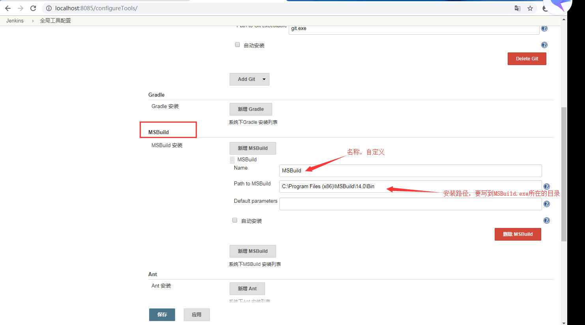
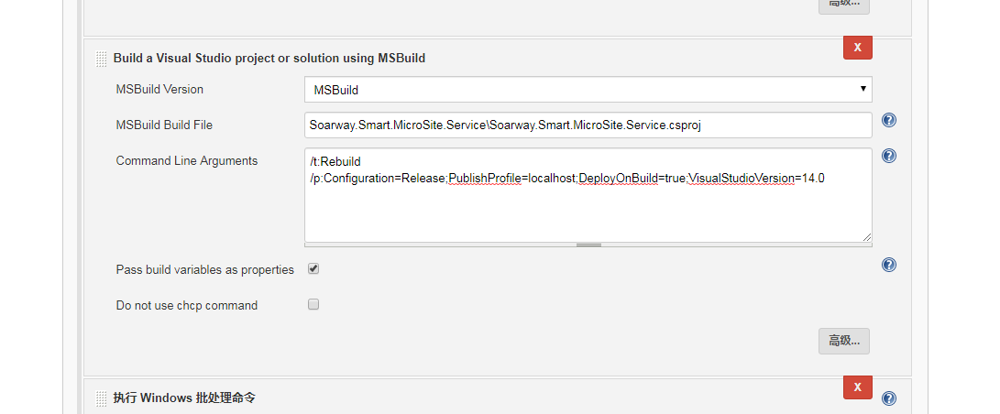

Jenkins使用MSBuild实现服务端项目的自动编译和部署
MSBuild是 Microsoft Build Engine 的缩写，代表 Microsoft 和 Visual Studio 的新的生成平台。MSBuild 在如何处理和生成软件方面是完全透明的，使开发人员能够在未安装 Visual Studio 的生成实验室环境中组织和生成产品。接下来本教程将实现如何使用MSBuild来编译发布服务的项目。
项目背景
- 项目：微网站服务端
- 开发工具：Visual Studio 2015
- 开发语言：C# 6.0
- 源码控制管理软件：Git
- 源码审查软件：Gerrit
实现目标
实现C#项目的编译发布，并部署到指定目录，最后通过钉钉通知构建结果，若要实现Git提交源码后任务自动构建，可将第三章与本章教程结合使用。
前期准备
1、框架项目，由于本项目较为特殊，需要依赖另一个框架项目，所以请确保在workspace下框架项目已存在，参考第二章。
2、选择MSBuild的版本，原则是要与项目使用的Visual Studio版本一致，如项目使用的是Visual Studio 2015进行开发，那么就必须使用MSBuild 2015进行编译，否则会出现C#版本不一致导致编译不通过问题，以下以MSBuild 2015为例。
3、下载安装MSBuild 2015,下载地址：https://www.microsoft.com/en-us/download/details.aspx?id=48159 。同时在Jenkins系统管理->插件管理中也需要找到MSBuild并安装。
4、配置MSBuild,打开Jenkins -> 系统管理 -> 全局工具配置，找到MSBuild，选择新增MSBuild,可以增加多个不同版本的MSBuild，填写相关信息，如下图： 5、确保MSBuild工具完整，若Jenkins服务器未安装Visual Studio版本，只安装了MSBuild，那么可能出现编译错误（WebApplication.target未找到）或者无法按照发布配置文件进行发布等问题，所以我们需要确保目录
C:\Program Files (x86)\MSBuild\Microsoft\VisualStudio\，下包含对应版本的文件，如v14.0对应MSBuild2015，若没有可以到其他有安装Visual Studio的服务器上去拷贝整个v14.0文件。 6、下载nuget.exe，用来在编译时还原nuget包，下载地址：https://www.nuget.org/downloads 。
7、钉钉通知，如果需要将构建结果通过钉钉进行及时通知的话，还需要在Jenkins->系统管理->插件管理中安装Dingding[钉钉]插件。新建Jenkins任务
1、General，填写任务描述。
2、源码管理，勾选Git，在Repository URL处填写源码仓储的地址，此处以本地仓储为例，如：C:\smart_micro_site_service，若源码地址为远程地址请参考第二章配置；分支（Branch）根据实际情况填写。
3、构建，构建我们分为三步，如下：- 第一步：添加
执行Windows批处理命令构建，命令行C:\Soft\nuget.exe restore，还原nuget包，其中“C:\Soft\nuget.exe”为nuget程序所在的物理路径。 - 第二步：添加
Build a Visual Studio project or solution using MSBuild构建，配置如下：- MSBuild Version：选择之前已经配置好的MSBuild。
- MSBuild Build File：填写项目文件csproj所在的相对路径，相对于workspace/jobname的路径。
- Command Line Arguments：MSBuild命令行，参考地址： https://docs.microsoft.com/zh-cn/visualstudio/msbuild/msbuild-command-line-reference?view=vs-2015 ，命令行：
/t:Rebuild
/p:Configuration=Release;PublishProfile=localhost;DeployOnBuild=true;VisualStudioVersion=14.0
根据项目发布文件进行编译，其中
PublishProfile=localhost表示使用项目的发布配置文件，localhost为配置文件的名称，配置文件中的配置项publishUrl发布路径最好使用相对路径，方便进行第三步，所以我们需要确保Properties\PublishProfiles.pubxml发布配置文件有提交到Git，这样我们才能使用。参考下图。 
- 第三步：添加
执行Windows批处理命令构建，将文件部署到指定目录，命令行：xcopy Soarway.Smart.MicroSite.Service\service "部署文件夹物理路径" /e /y，其中“service”，为上一步配置文件中配置的publishUrl。
5、构建后操作，如果想通过钉钉实时通知构建结果，那么可以增加构建后操作步骤钉钉通知器配置，填写钉钉access token，以及勾选需要通知的状态即可。
如何获取钉钉access token
- 首先我们需要一个钉钉群，然后创建一个自定义的群机器人，如果你不是管理员是无法创建群机器人的，可以自己创建一个群来测试。
- 群机器人创建好后找到webhook，其中webhook的access_token参数的值就是我们要的钉钉access token。
- 第一步：添加